Lake Malome Study Notebook#
import ee
# Initialize the Earth Engine module.
ee.Initialize()
from util import *
Figure 2#
startDate1 = '2019-05-08'
endDate1 = '2019-05-12'
startDate2 = '2019-06-22'
endDate2 = '2019-06-24'
startDate3 = '2019-07-10'
endDate3 = '2019-07-20'
startDate4 = '2019-08-16'
endDate4 = '2019-08-21'
startDate5 = '2019-09-10'
endDate5 = '2019-09-12'
startDate6 = '2019-10-15'
endDate6 = '2019-10-17'
Calibration#
# Sampling locations in June, 2019
west_jun = ee.Geometry.Point([35.202406, -14.667367])
outlet_jun = ee.Geometry.Point([35.251639, -14.748801])
middle_jun = ee.Geometry.Point([35.248367, -14.628858])
inlet_jun = ee.Geometry.Point([35.257927, -14.538845])
east_jun = ee.Geometry.Point([35.31461, -14.631364])
# Sampling locations in September, 2019
west_sep = ee.Geometry.Point([35.202406, -14.667367])
outlet_sep = ee.Geometry.Point([35.251639, -14.748801])
middle_sep = ee.Geometry.Point([35.248367, -14.628858])
inlet_sep = ee.Geometry.Point([35.257927, -14.538845])
east_sep = ee.Geometry.Point([35.31461, -14.631364])
withChla_w6 = mean_image_S2(west_jun, startDate2, endDate2).map(addNDCI_S2).select('NDCI')
withChla_o6 = mean_image_S2(outlet_jun, startDate2, endDate2).map(addNDCI_S2).select('NDCI')
withChla_m6 = mean_image_S2(middle_jun, startDate2, endDate2).map(addNDCI_S2).select('NDCI')
withChla_i6 = mean_image_S2(inlet_jun, startDate2, endDate2).map(addNDCI_S2).select('NDCI')
withChla_e6 = mean_image_S2(east_jun, startDate2, endDate2).map(addNDCI_S2).select('NDCI')
withChla_w9 = mean_image_S2(west_sep, startDate5, endDate5).map(addNDCI_S2).select('NDCI')
withChla_o9 = mean_image_S2(outlet_sep, startDate5, endDate5).map(addNDCI_S2).select('NDCI')
withChla_m9 = mean_image_S2(middle_sep, startDate5, endDate5).map(addNDCI_S2).select('NDCI')
withChla_i9 = mean_image_S2(inlet_sep, startDate5, endDate5).map(addNDCI_S2).select('NDCI')
withChla_e9 = mean_image_S2(east_sep, startDate5, endDate5).map(addNDCI_S2).select('NDCI')
bounds_west_jun = west_jun.buffer(300)
bounds_outlet_jun = outlet_jun.buffer(300)
bounds_middle_jun = middle_jun.buffer(300)
bounds_inlet_jun = inlet_jun.buffer(300)
bounds_east_jun = east_jun.buffer(300)
bounds_west_sep = west_sep.buffer(300)
bounds_outlet_sep = outlet_sep.buffer(300)
bounds_middle_sep = middle_sep.buffer(300)
bounds_inlet_sep = inlet_sep.buffer(300)
bounds_east_sep = east_sep.buffer(300)
chla_df_w6 = dataframe_prod(withChla_w6, bounds_west_jun, 'NDCI')
chla_df_o6 = dataframe_prod(withChla_o6, bounds_outlet_jun, 'NDCI')
chla_df_m6 = dataframe_prod(withChla_m6, bounds_middle_jun, 'NDCI')
chla_df_i6 = dataframe_prod(withChla_i6, bounds_inlet_jun, 'NDCI')
chla_df_e6 = dataframe_prod(withChla_e6, bounds_east_jun, 'NDCI')
chla_df_w9 = dataframe_prod(withChla_w9, bounds_west_sep, 'NDCI')
chla_df_o9 = dataframe_prod(withChla_o9, bounds_outlet_sep, 'NDCI')
chla_df_m9 = dataframe_prod(withChla_m9, bounds_middle_sep, 'NDCI')
chla_df_i9 = dataframe_prod(withChla_i9, bounds_inlet_sep, 'NDCI')
chla_df_e9 = dataframe_prod(withChla_e9, bounds_east_sep, 'NDCI')
S_NDCI = np.concatenate((chla_df_w6['NDCI'].values,\
chla_df_o6['NDCI'].values,\
chla_df_m6['NDCI'].values,\
np.array([chla_df_i6['NDCI'].values.mean()]),\
chla_df_e6['NDCI'].values,\
chla_df_w9['NDCI'].values,\
chla_df_o9['NDCI'].values,\
chla_df_m9['NDCI'].values,\
np.array([chla_df_i9['NDCI'].values.mean()]),\
chla_df_e9['NDCI'].values\
), axis=0)
# In-situ data
chla_jun = np.array([3.1128, 4.5416, 3.7401, 3.1390, 2.6231])
chla_sep = np.array([13.3576, 6.5588, 5.2463, 9.3652, 7.5128])
chla_insitu =np.concatenate((chla_jun, chla_sep), axis=0)
plt.xlabel('Satellite derived NDCI')
plt.ylabel('In-situ Chal [$mg/m^3$]')
plt.scatter(S_NDCI, chla_insitu, color='k');
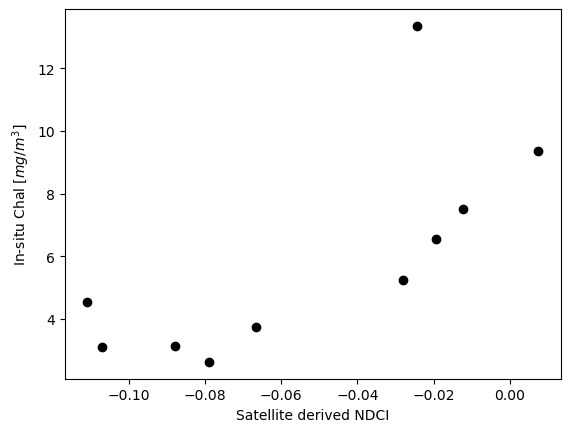
def NDCI_algorithm(x):
return 9.547 + 104.809*x + 431.976*x**2
NDCI_v = np.vectorize(NDCI_algorithm)
Yhat = NDCI_v(S_NDCI)
Y = chla_insitu
d1 = Y - Yhat
d2 = Y - Y.mean()
r2 = 1-d1.dot(d1)/d2.dot(d2)
p = np.poly1d(np.polyfit(S_NDCI, chla_insitu,2))
t = np.linspace(-0.125, 0.05, 100)
plt.xlabel('Satellite derived NDCI')
plt.ylabel('In-situ Chal [$mg/m^3$]')
plt.title(f'$R^2$ = {round(r2, 2)}')
plt.plot(S_NDCI, chla_insitu, 'o', t, p(t), '-', color='k');
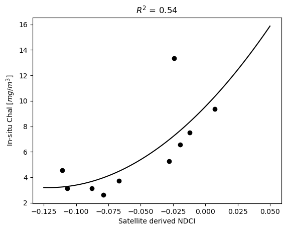
fig, ax = plt.subplots(figsize=(10.5,7))
ax = sns.regplot(x=S_NDCI, y=chla_insitu, ci=95, order=2, color='k', line_kws={'label': 'Regression line'})
ax.set_ylim([0,16])
ax.set_xlabel('Satellite-derived NDCI')
ax.set_ylabel('In-situ Chal [$mg/m^3$]')
ax.set_title(f'$R^2$ = {round(r2, 2)}')
ax.collections[1].set_label('Confidence interval')
ax.legend(loc='upper left');
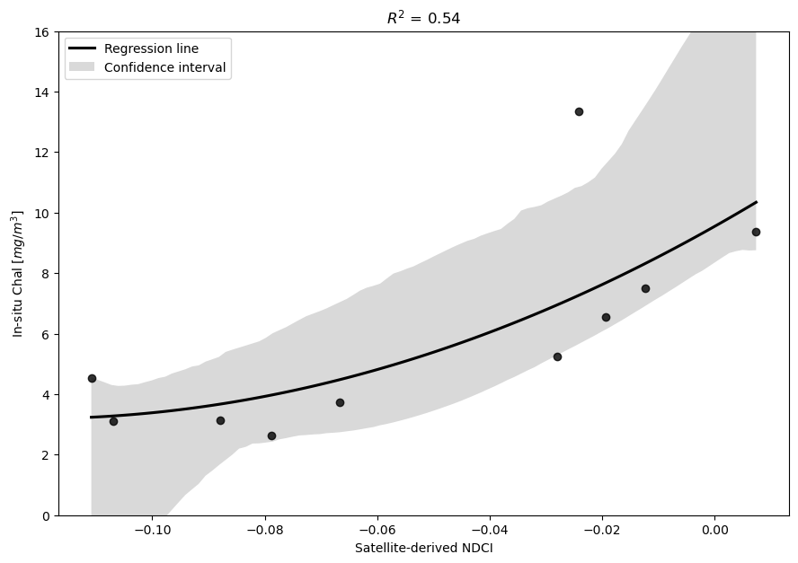
Validation#
# Sampling locations in May, 2019
west_may = ee.Geometry.Point([35.202981, -14.639683])
outlet_may = ee.Geometry.Point([35.264812, -14.724981])
middle_may = ee.Geometry.Point([35.238484, -14.618457])
inlet_may = ee.Geometry.Point([35.236233, -14.53507])
east_may = ee.Geometry.Point([35.300301, -14.60977])
# Sampling locations in July, 2019
west_jul = ee.Geometry.Point([35.201257, -14.681778])
outlet_jul = ee.Geometry.Point([35.231031, -14.746615])
middle_jul = ee.Geometry.Point([35.239606, -14.628442])
inlet_jul = ee.Geometry.Point([35.259763, -14.552618])
east_jul = ee.Geometry.Point([35.323783, -14.641138])
# Sampling locations in August, 2019
west_aug = ee.Geometry.Point([35.202981, -14.639683])
outlet_aug = ee.Geometry.Point([35.264812, -14.724981])
middle_aug = ee.Geometry.Point([35.238484, -14.618457])
inlet_aug = ee.Geometry.Point([35.236233, -14.53507])
east_aug = ee.Geometry.Point([35.300301, -14.60977])
# Sampling locations in October, 2019
west_oct = ee.Geometry.Point([35.201257, -14.681778])
outlet_oct = ee.Geometry.Point([35.231031, -14.746615])
middle_oct = ee.Geometry.Point([35.239606, -14.628442])
inlet_oct = ee.Geometry.Point([35.259763, -14.552618])
east_oct = ee.Geometry.Point([35.323783, -14.641138])
withChla_w5 = mean_image_S2(west_may, startDate1, endDate1).map(addNDCI_S2).select('NDCI')
withChla_o5 = mean_image_S2(outlet_may, startDate1, endDate1).map(addNDCI_S2).select('NDCI')
withChla_m5 = mean_image_S2(middle_may, startDate1, endDate1).map(addNDCI_S2).select('NDCI')
withChla_i5 = mean_image_S2(inlet_may, startDate1, endDate1).map(addNDCI_S2).select('NDCI')
withChla_e5 = mean_image_S2(east_may, startDate1, endDate1).map(addNDCI_S2).select('NDCI')
withChla_w7 = mean_image_S2(west_jul, startDate3, endDate3).map(addNDCI_S2).select('NDCI')
withChla_o7 = mean_image_S2(outlet_jul, startDate3, endDate3).map(addNDCI_S2).select('NDCI')
withChla_m7 = mean_image_S2(middle_jul, startDate3, endDate3).map(addNDCI_S2).select('NDCI')
withChla_i7 = mean_image_S2(inlet_jul, startDate3, endDate3).map(addNDCI_S2).select('NDCI')
withChla_w8 = mean_image_S2(west_aug, startDate4, endDate4).map(addNDCI_S2).select('NDCI')
withChla_o8 = mean_image_S2(outlet_aug, startDate4, endDate4).map(addNDCI_S2).select('NDCI')
withChla_m8 = mean_image_S2(middle_aug, startDate4, endDate4).map(addNDCI_S2).select('NDCI')
withChla_i8 = mean_image_S2(inlet_aug, startDate4, endDate4).map(addNDCI_S2).select('NDCI')
withChla_e8 = mean_image_S2(east_aug, startDate4, endDate4).map(addNDCI_S2).select('NDCI')
withChla_w10 = mean_image_S2(west_oct, startDate6, endDate6).map(addNDCI_S2).select('NDCI')
withChla_o10 = mean_image_S2(outlet_oct, startDate6, endDate6).map(addNDCI_S2).select('NDCI')
withChla_m10 = mean_image_S2(middle_oct, startDate6, endDate6).map(addNDCI_S2).select('NDCI')
withChla_i10 = mean_image_S2(inlet_oct, startDate6, endDate6).map(addNDCI_S2).select('NDCI')
withChla_e10 = mean_image_S2(east_oct, startDate6, endDate6).map(addNDCI_S2).select('NDCI')
bounds_west_may = west_may.buffer(300)
bounds_outlet_may = outlet_may.buffer(300)
bounds_middle_may = middle_may.buffer(300)
bounds_inlet_may = inlet_may.buffer(300)
bounds_east_may = east_may.buffer(300)
bounds_west_jul = west_jul.buffer(300)
bounds_outlet_jul = outlet_jul.buffer(300)
bounds_middle_jul = middle_jul.buffer(300)
bounds_inlet_jul = inlet_jul.buffer(300)
bounds_east_jul = east_jul.buffer(300)
bounds_west_aug = west_aug.buffer(300)
bounds_outlet_aug = outlet_aug.buffer(300)
bounds_middle_aug = middle_aug.buffer(300)
bounds_inlet_aug = inlet_aug.buffer(300)
bounds_east_aug = east_aug.buffer(300)
bounds_west_oct = west_oct.buffer(300)
bounds_outlet_oct = outlet_oct.buffer(300)
bounds_middle_oct = middle_oct.buffer(300)
bounds_inlet_oct = inlet_oct.buffer(300)
bounds_east_oct = east_oct.buffer(300)
chla_df_w5 = dataframe_prod(withChla_w5, bounds_west_may, 'NDCI')
chla_df_o5 = dataframe_prod(withChla_o5, bounds_outlet_may, 'NDCI')
chla_df_m5 = dataframe_prod(withChla_m5, bounds_middle_may, 'NDCI')
chla_df_i5 = dataframe_prod(withChla_i5, bounds_inlet_may, 'NDCI')
chla_df_e5 = dataframe_prod(withChla_e5, bounds_east_may, 'NDCI')
chla_df_w7 = dataframe_prod(withChla_w7, bounds_west_jul, 'NDCI')
chla_df_o7 = dataframe_prod(withChla_o7, bounds_outlet_jul, 'NDCI')
chla_df_m7 = dataframe_prod(withChla_m7, bounds_middle_jul, 'NDCI')
chla_df_i7 = dataframe_prod(withChla_i7, bounds_inlet_jul, 'NDCI')
chla_df_w8 = dataframe_prod(withChla_w8, bounds_west_aug, 'NDCI')
chla_df_o8 = dataframe_prod(withChla_o8, bounds_outlet_aug, 'NDCI')
chla_df_m8 = dataframe_prod(withChla_m8, bounds_middle_aug, 'NDCI')
chla_df_i8 = dataframe_prod(withChla_i8, bounds_inlet_aug, 'NDCI')
chla_df_e8 = dataframe_prod(withChla_e8, bounds_east_aug, 'NDCI')
chla_df_w10 = dataframe_prod(withChla_w10, bounds_west_oct, 'NDCI')
chla_df_o10 = dataframe_prod(withChla_o10, bounds_outlet_oct, 'NDCI')
chla_df_m10 = dataframe_prod(withChla_m10, bounds_middle_oct, 'NDCI')
chla_df_i10 = dataframe_prod(withChla_i10, bounds_inlet_oct, 'NDCI')
chla_df_e10 = dataframe_prod(withChla_e10, bounds_east_oct, 'NDCI')
S_NDCI_val = np.concatenate((chla_df_w5['NDCI'].values,\
chla_df_o5['NDCI'].values,\
chla_df_m5['NDCI'].values,\
np.array([chla_df_i5['NDCI'].values.mean()]),\
chla_df_e5['NDCI'].values,\
chla_df_w7['NDCI'].values,\
chla_df_o7['NDCI'].values,\
chla_df_m7['NDCI'].values,\
chla_df_i7['NDCI'].values,\
chla_df_w8['NDCI'].values,\
chla_df_o8['NDCI'].values,\
chla_df_m8['NDCI'].values,\
np.array([chla_df_i8['NDCI'].values.mean()]),\
chla_df_e8['NDCI'].values,\
chla_df_w10['NDCI'].values,\
chla_df_o10['NDCI'].values,\
chla_df_m10['NDCI'].values,\
chla_df_i10['NDCI'].values,\
chla_df_e10['NDCI'].values\
), axis=0)
# In-situ data
chla_may = np.array([3.9182, 3.6110, 2.0985, 2.0985, 3.2866])
chla_jul = np.array([3.2195, 4.6712, 3.4762, 4.2744])
chla_aug = np.array([11.1313, 6.2017, 8.9199, 3.1478, 8.7450])
chla_oct = np.array([12.2135, 9.4616, 4.5621, 13.3576, 6.7654])
chla_insitu_val =np.concatenate((chla_may, chla_jul, chla_aug, chla_oct), axis=0)
X_sat = NDCI_v(S_NDCI_val)
Y_insitu = chla_insitu_val
rmse = np.sqrt(np.mean((X_sat[1:] - Y_insitu[1:])**2))
fig = plt.figure(figsize=(10.5,7))
plt.xlabel('Satellite derived Chl-a [$mg/m^3$]')
plt.ylabel('In-situ Chl-a [$mg/m^3$]')
plt.title(f'Validation\nRMSE = {round(rmse, 2)}')
plt.scatter(X_sat[:], Y_insitu[:], color='k')
plt.ylim([0,16])
x_vals = np.linspace(0,15,100)
y_vals = x_vals
plt.plot(x_vals, y_vals, 'k--');
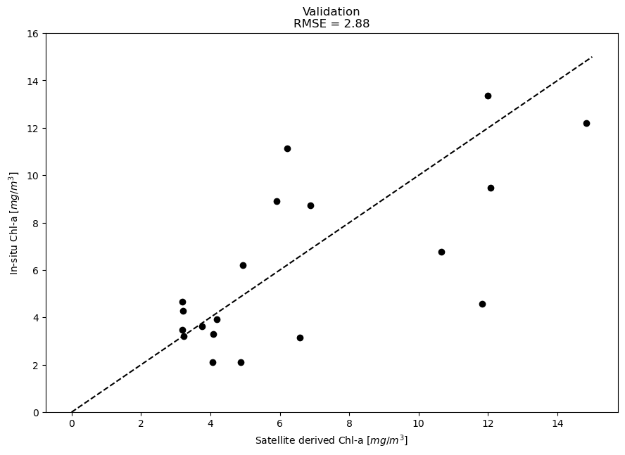
plt.rcParams.update({'font.size': 22})
_, axs = plt.subplots(1, 2, figsize=(20, 10), edgecolor='black', constrained_layout=True, dpi=600)
ax= axs[0]
sns.regplot(ax=ax, x=S_NDCI, y=chla_insitu, ci=95, order=2, color='k', scatter_kws={'s':150}, line_kws={'label': 'Regression line'})
# ax.set_ylim([0,16])
ax.set_xlabel('Satellite-derived NDCI')
ax.set_ylabel('Measured Chl-a [$mg/m^3$]')
# ax.set_title(f'$R^2$ = {round(r2, 2)}')
ax.set_title('(a) Calibration')
ax.collections[1].set_label('Confidence interval')
ax.legend(loc='upper left')
ax = axs[1]
ax.set_xlabel('Predicted Chl-a [$mg/m^3$]')
ax.set_ylabel('Measured Chl-a [$mg/m^3$]')
# ax.set_title(f'Validation\nRMSE = {round(rmse, 2)}')
ax.set_title('(b) Validation')
ax.scatter(X_sat[:], Y_insitu[:], color='k', s=150)
ax.axhline(alpha=0.5, c='k')
ax.axvline(alpha=0.5, c='k')
x_vals = np.linspace(-0.1,16,100)
y_vals = x_vals
plt.plot(x_vals, y_vals, 'k--');
# plt.savefig('./figure2.png')

Figure 3#
startDate = '2019-05-01'
endDate = '2019-05-30'
S2_BANDS = ee.List(['B12', 'B11', 'B8', 'B3', 'B4', 'B5', 'B2', 'QA60'])
S2_NAMES = ee.List(['swir1', 'swir2', 'nir', 'green', 'red', 'red2', 'blue', 'QA60'])
geom = ee.Geometry.Polygon(
[[[35.19496429044744, -14.647115511359019],
[35.19496429044744, -14.661730297242592],
[35.205263973064625, -14.661730297242592],
[35.205263973064625, -14.647115511359019]]])
Sen2ImageCollection = ee.ImageCollection('COPERNICUS/S2_SR')\
.filterBounds(geom)\
.filterDate(startDate, endDate)\
.filterMetadata('CLOUDY_PIXEL_PERCENTAGE', 'less_than', 20)\
.select(S2_BANDS)\
.map(cloudMasking_S2_otsu)
bounds = ee.Geometry.Polygon(
[
[
[35.05117393493859,-14.567476706515635],
[34.98249502357456,-14.56747684216918],
[34.98249563853923,-14.712498859903812],
[35.05117379139305,-14.71249872295211],
[35.05117405325887,-14.712498726424245],
[35.05117407847995,-14.71249872295211],
[35.12078247974755,-14.71249872295211],
[35.12078274161338,-14.712498726424252],
[35.12078276683445,-14.71249872295211],
[35.19039116810203,-14.712498722952114],
[35.19039142996786,-14.712498726424249],
[35.19039145518894,-14.71249872295211],
[35.25999985645652,-14.71249872295211],
[35.260000118322345,-14.712498726424249],
[35.26000014354343,-14.71249872295211],
[35.329608544811016,-14.71249872295211],
[35.329608806676845,-14.712498726424249],
[35.32960883189792,-14.712498722952114],
[35.3992172331655,-14.71249872295211],
[35.39921749503134,-14.712498726424249],
[35.39921752025242,-14.71249872295211],
[35.46882592151999,-14.71249872295211],
[35.468826183385815,-14.712498726424252],
[35.468826208606906,-14.71249872295211],
[35.537504361460726,-14.712498859903809],
[35.537504976425396,-14.56747684216918],
[35.46882606506404,-14.56747670651563],
[35.39921737670757,-14.567476706515633],
[35.32960868835529,-14.567476706515635],
[35.2600000000008,-14.567476706515635],
[35.19039131164532,-14.567476706515633],
[35.120782623289905,-14.56747670651563],
[35.05117393493859,-14.567476706515635]
]
])
w = 0.15
h = 0.2
lon, lat = 35.26, -14.64
region = [lon + w, lat - h, lon - w, lat + h]
fig = plt.figure(figsize=(10, 8))
withWater = addWater_S2(Sen2ImageCollection, startDate, endDate, bounds)
withWater = withWater.divide(10000)
# print(withWater.select('water'))
waterVisParams = {
'min': 0,
'max': 1,
'palette': ['Blue']
};
# use cartoee to get a map
ax = cartoee.get_map(withWater.select('water'), region=region, vis_params=waterVisParams)
cartoee.add_gridlines(ax, interval=[0.05, 0.05], linestyle=":")
plt.show()
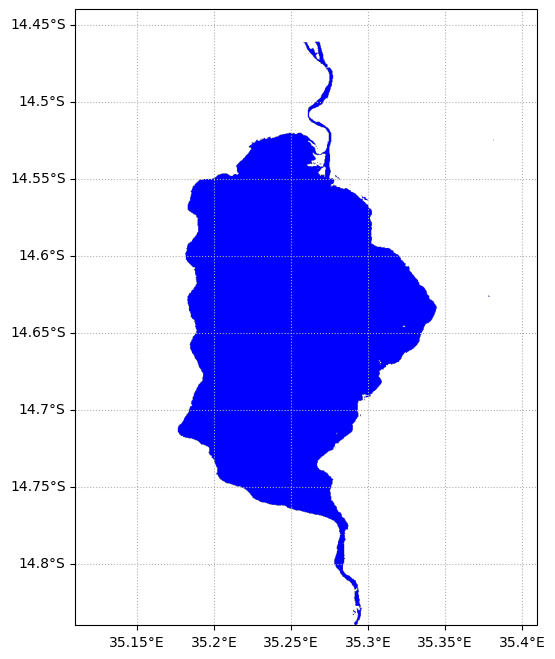
S2_BANDS_2 = ['B12', 'B11', 'B8', 'B3', 'B4', 'B5', 'B2', 'QA60', 'water']
S2_NAMES_2 = ['swir1', 'swir2', 'nir', 'green', 'red', 'red2', 'blue', 'QA60', 'water']
updatedMaskedImage = withWater.select(S2_BANDS_2, S2_NAMES_2)
ChlaVisParam={
'min':0,
'max':20,
'palette':['152E13', '183815', '1A4216', '1C4D17', '1E5817', '206416', '237015', '257D14', '278A12', '29980F', '2BA60C', '2EB509', '31C405', '34D400', '71DD22', 'A5E544', 'D0EC66']
};
equation = '9.547+104.809*((RED2-RED1)/(RED2+RED1))+431.976*((RED2-RED1)/(RED2+RED1))**2'
Chla = updatedMaskedImage.expression(equation,
{'RED2':updatedMaskedImage.select('red2'),'RED1':updatedMaskedImage.select('red')})
mask = withWater.select('water').gt(0);
LakeWaterMask = updatedMaskedImage.updateMask(mask)
ChlaMask = Chla.updateMask(mask);
plt.rcParams.update({'font.size': 16})
fig = plt.figure(figsize=(10, 10))
ax = cartoee.get_map(ChlaMask, region=region, vis_params=ChlaVisParam)
ax.set_title('May')
cartoee.add_gridlines(ax, interval=[0.05, 0.05], linestyle=":")
cartoee.add_colorbar(
ax, ChlaVisParam, loc="right", label="Chla-concentrations [$mg/m^3$]", orientation="vertical"
)
# add the gridlines and specify that the xtick labels be rotated 45 degrees
# cartoee.add_gridlines(ax, interval=0.5, xtick_rotation=0, linestyle=":")
# add north arrow
cartoee.add_north_arrow(
ax, text="N", xy=(0.1, 0.25), text_color="black", arrow_color="black", fontsize=15
)
# add scale bar
cartoee.add_scale_bar_lite(
ax, length=5, xy=(0.2, 0.05), fontsize=16, color="black", unit="km"
)
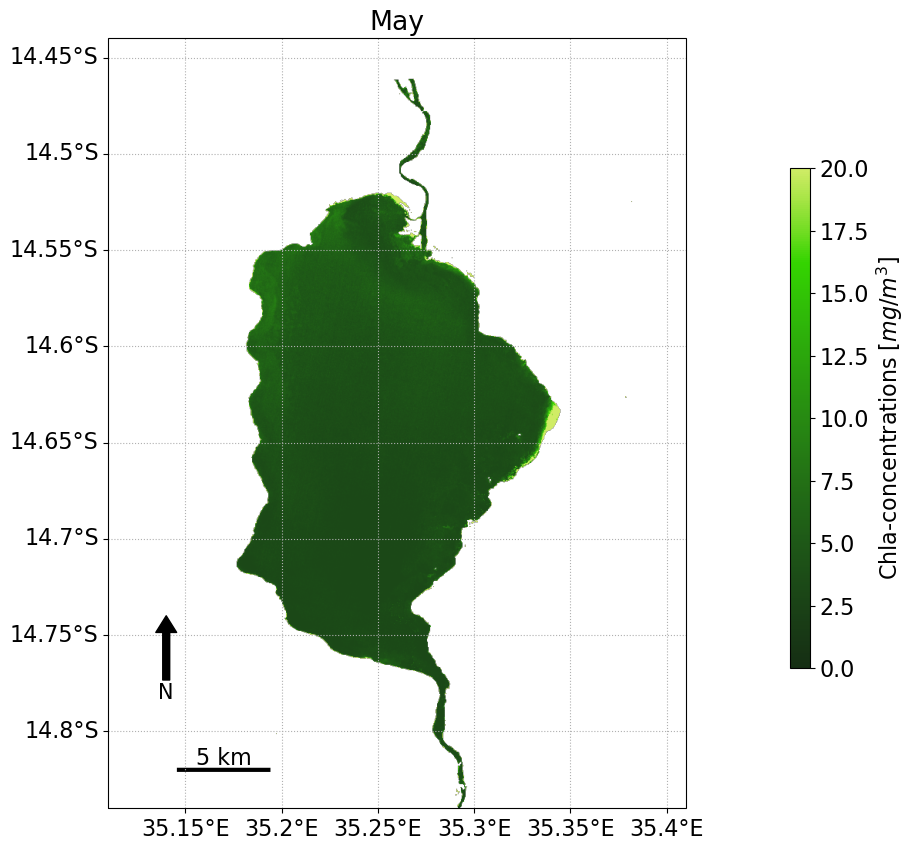
Figure 4#
startDate = '2019-01-01'
endDate = '2019-12-30'
west = ee.Geometry.Point([35.204209, -14.667607])
outlet = ee.Geometry.Point([35.264812, -14.724981])
middle = ee.Geometry.Point([35.238484, -14.618457])
inlet = ee.Geometry.Point([35.236233, -14.53507])
east = ee.Geometry.Point([35.300301, -14.60977])
Sen2ImageCollection = ee.ImageCollection('COPERNICUS/S2_SR')\
.filterBounds(middle)\
.filterDate(startDate, endDate)\
.filterMetadata('CLOUDY_PIXEL_PERCENTAGE', 'less_than', 20)\
.map(cloudMasking_S2_div)
equation = '9.547+104.809*((RED2-RED)/(RED2+RED))+431.976*((RED2-RED)/(RED2+RED))**2'
withChla = Sen2ImageCollection.map(lambda img: addChla_S2(img, equation)).select('Chla')
bounds_inlet = inlet.buffer(300)
bounds_east = east.buffer(300)
bounds_west = west.buffer(300)
bounds_middle = middle.buffer(300)
bounds_outlet = outlet.buffer(300)
chla_df_inlet = dataframe_prod(withChla, bounds_inlet, 'Chla')
chla_df_east = dataframe_prod(withChla, bounds_east, 'Chla')
chla_df_west = dataframe_prod(withChla, bounds_west, 'Chla')
chla_df_middle = dataframe_prod(withChla, bounds_middle, 'Chla')
chla_df_outlet = dataframe_prod(withChla, bounds_outlet, 'Chla')
fig, ax = plt.subplots(figsize=(14, 6))
ax.plot(chla_df_inlet['datetime'], chla_df_inlet['Chla'],
'k-', alpha=0.8, label='Chla - RS')
inlet_dic = {
'datetime': ['2019-05-14', '2019-06-24', '2019-07-18', '2019-08-20', '2019-09-12', '2019-10-11'],
'Chla': [2.0985, 3.1390, 4.2744, 3.1478, 9.3652, 13.3576]
}
inlet_df = pd.DataFrame(inlet_dic)
inlet_df['datetime'] = pd.to_datetime(inlet_df['datetime'])
ax.scatter(inlet_df['datetime'], inlet_df['Chla'], c='None', edgecolors='k', s=200, label='Chla - 0m')
ax.set_title('Inlet', fontsize=20)
ax.set_xlabel('Date', fontsize=16)
ax.set_ylabel('Chla concentration [$mg/m^3$]', fontsize=16)
ax.set_ylim(-0, 16)
ax.grid(lw=0.2)
ax.tick_params(which='both', labelsize=16, pad=3)
ax.legend(fontsize=16, loc='lower right');
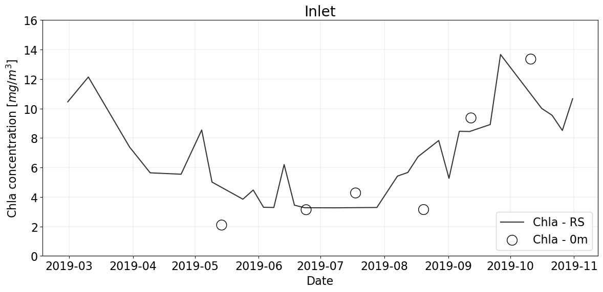
fig, ax = plt.subplots(figsize=(14, 6))
ax.plot(chla_df_inlet['datetime'], chla_df_inlet['Chla'],
'kv-', alpha=0.8, label='Inlet')
ax.plot(chla_df_east['datetime'], chla_df_east['Chla'],
'ko-', alpha=0.8, label='East')
ax.plot(chla_df_west['datetime'], chla_df_west['Chla'],
'ks-', alpha=0.8, label='West')
ax.plot(chla_df_middle['datetime'], chla_df_middle['Chla'],
'kp-', alpha=0.8, label='Middle')
ax.plot(chla_df_outlet['datetime'], chla_df_outlet['Chla'],
'k^-', alpha=0.8, label='Outlet')
ax.set_xlabel('Date', fontsize=14)
ax.set_ylabel('Chla concentration [$mg/m^3$]', fontsize=14)
ax.set_ylim(-0, 20)
ax.grid(lw=0.2)
ax.legend(fontsize=14, loc='lower right');
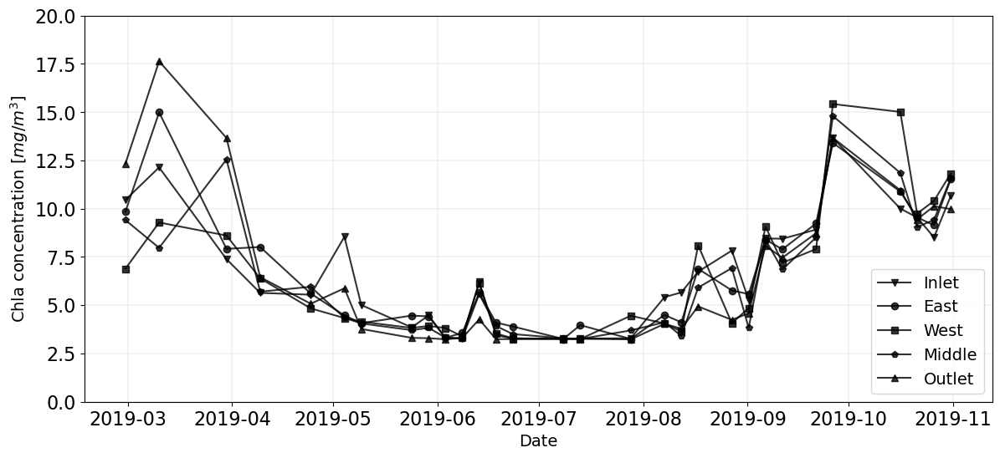
chla_df_total = np.hstack((chla_df_inlet['Chla'].to_numpy(),\
chla_df_east['Chla'].to_numpy(),\
chla_df_west['Chla'].to_numpy(),\
chla_df_middle['Chla'].to_numpy(),\
chla_df_outlet['Chla'].to_numpy()
))
chla_df_total = chla_df_total.reshape(5,-1)
chla_df_total_mean = chla_df_total.mean(axis=0)
chla_df_inlet.head()
plt.rcParams.update({'font.size': 16})
_, axs = plt.subplots(3, 2, figsize=(16, 9), constrained_layout=True, sharey=True, sharex=True, dpi=600)
axs = axs.flatten()
for i in range(6):
ax = axs[i]
if i == 0:
ax.plot(chla_df_inlet['datetime'], chla_df_inlet['Chla'],
'k-', alpha=0.8, label='Chla - RS')
inlet_dic = {
'datetime': ['2019-05-14', '2019-06-24', '2019-07-18', '2019-08-20', '2019-09-12', '2019-10-11'],
'Chla': [2.0985, 3.1390, 4.2744, 3.1478, 9.3652, 13.3576]
}
inlet_df = pd.DataFrame(inlet_dic)
inlet_df['datetime'] = pd.to_datetime(inlet_df['datetime'])
ax.scatter(inlet_df['datetime'], inlet_df['Chla'], c='None', edgecolors='k', s=100, label='Chla - 0m')
ax.set_title('Inlet')
ax.set_ylabel('Chla concentration \n [$mg/m^3$]')
elif i == 1:
ax.plot(chla_df_east['datetime'], chla_df_east['Chla'],
'k-', alpha=0.8, label='Chla - RS')
east_dic = {
'datetime': ['2019-05-14', '2019-06-24', '2019-07-18', '2019-08-20', '2019-09-12', '2019-10-11'],
'Chla': [3.2866, 2.6231, 2.1347, 8.7450, 7.5128, 6.7654]
}
east_df = pd.DataFrame(east_dic)
east_df['datetime'] = pd.to_datetime(east_df['datetime'])
ax.scatter(east_df['datetime'], east_df['Chla'], c='None', edgecolors='k', s=100, label='Chla - 0m')
ax.set_title('East')
elif i == 2:
ax.plot(chla_df_middle['datetime'], chla_df_middle['Chla'],
'k-', alpha=0.8, label='Chla - RS')
middle_dic = {
'datetime': ['2019-05-14', '2019-06-24', '2019-07-18', '2019-08-20', '2019-09-12', '2019-10-11'],
'Chla': [2.0985, 3.7401, 3.4762, 8.9199, 5.2463, 4.5621]
}
middle_df = pd.DataFrame(middle_dic)
middle_df['datetime'] = pd.to_datetime(middle_df['datetime'])
ax.scatter(middle_df['datetime'], middle_df['Chla'], c='None', edgecolors='k', s=100, label='Chla - 0m')
ax.set_title('Middle')
ax.set_ylabel('Chla concentration \n [$mg/m^3$]')
elif i == 3:
ax.plot(chla_df_west['datetime'], chla_df_west['Chla'],
'k-', alpha=0.8, label='Chla - RS')
west_dic = {
'datetime': ['2019-05-14', '2019-06-24', '2019-07-18', '2019-08-20', '2019-09-12', '2019-10-11'],
'Chla': [3.9182, 3.1128, 3.2195, 11.1313, 13.3576, 12.2135]
}
west_df = pd.DataFrame(west_dic)
west_df['datetime'] = pd.to_datetime(west_df['datetime'])
ax.scatter(west_df['datetime'], west_df['Chla'], c='None', edgecolors='k', s=100, label='Chla - 0m')
# Add some parameters.
ax.set_title('West')
elif i == 4:
ax.plot(chla_df_outlet['datetime'], chla_df_outlet['Chla'],
'k-', alpha=0.8, label='Chla - RS')
outlet_dic = {
'datetime': ['2019-05-14', '2019-06-24', '2019-07-18', '2019-08-20', '2019-09-12', '2019-10-11'],
'Chla': [3.6110, 4.5416, 4.6712, 6.2017, 6.5588, 9.4616,]
}
outlet_df = pd.DataFrame(outlet_dic)
outlet_df['datetime'] = pd.to_datetime(outlet_df['datetime'])
ax.scatter(outlet_df['datetime'], outlet_df['Chla'], c='None', edgecolors='k', s=100, label='Chla - 0m')
# Add some parameters.
ax.set_title('Outlet')
ax.set_xlabel('Date', fontsize=12)
ax.set_ylabel('Chla concentration \n [$mg/m^3$]')
elif i == 5:
ax.plot(chla_df_inlet['datetime'], chla_df_inlet['Chla'],
'k-', alpha=0.8, label='Inlet')
ax.plot(chla_df_east['datetime'], chla_df_east['Chla'],
'k--', alpha=0.8, label='East')
ax.plot(chla_df_west['datetime'], chla_df_west['Chla'],
'k-.', alpha=0.8, label='West')
ax.plot(chla_df_middle['datetime'], chla_df_middle['Chla'],
'k:', alpha=0.8, label='Middle')
ax.plot(chla_df_outlet['datetime'], chla_df_outlet['Chla'],
'k--.', alpha=0.8, label='Outlet')
ax.set_xlabel('Date', fontsize=12)
ax.set_ylim(-0, 20)
ax.grid(lw=0.2)
ax.legend(loc='lower right', fontsize=11)
ax.tick_params(axis='both', labelsize=12)
# plt.savefig('./figure4.png')

Table 4#
matrix1 = np.vstack((chla_df_middle['Chla'][:], chla_df_inlet['Chla'][:], chla_df_east['Chla'][:],chla_df_outlet['Chla'][:], chla_df_west['Chla'][:]))
r, p = corrcoef_loop(matrix1)
np.round(r,3)
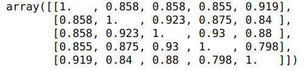
Figure 5#
def double_logistic(x, max_value, amp, slope1, SOS, slope2, EOS):
return max_value + amp*(1/(1+np.exp(slope1*(x-SOS))) + 1/(1+np.exp(-slope2*(x-EOS)))-1)
x = chla_df_inlet['DOY']
y = chla_df_total_mean
dlModel = Model(double_logistic)
result = dlModel.fit(y, x=x, max_value=11, amp=8, slope1=0.05, SOS=100, slope2=0.05, EOS=270)
print(result.fit_report())
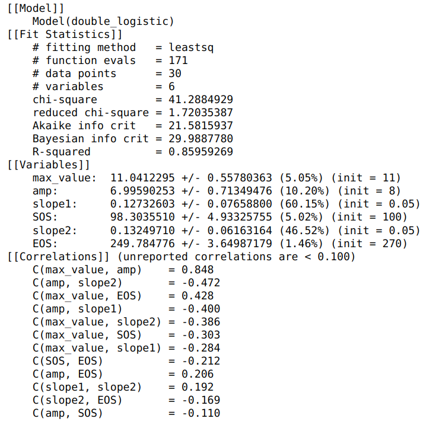
plt.plot(x, y, 'o')
plt.plot(x, result.best_fit, '-', label='best fit');
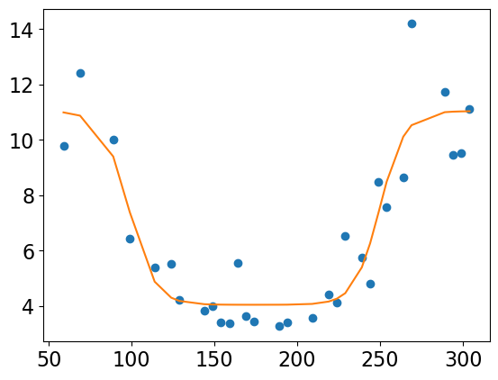
plt.rcParams.update({'font.size': 16})
fig, ax = plt.subplots(figsize=(14, 6),constrained_layout=True, dpi=600)
ax.plot(x, result.best_fit,
'k-', alpha=0.8, label='Fitting results')
ax.scatter(x, y, c='None', edgecolors='k', s=100, label='Chla - RS')
# Add some parameters.
# ax.set_title('Outlet', fontsize=16)
ax.set_xlabel('Day of year')
ax.set_ylabel('Chl-a concentration\n [$mg/m^3$]')
ax.set_ylim(-0, 15)
ax.grid(lw=0.2)
ax.axvline(98, c='k', ls=':')
ax.axvline(250, c='k', ls=':')
ax.legend(['Fitting results','Chla - RS', 'EOS and SOS'], loc='lower right')
ax.tick_params(axis='both', labelsize=14);
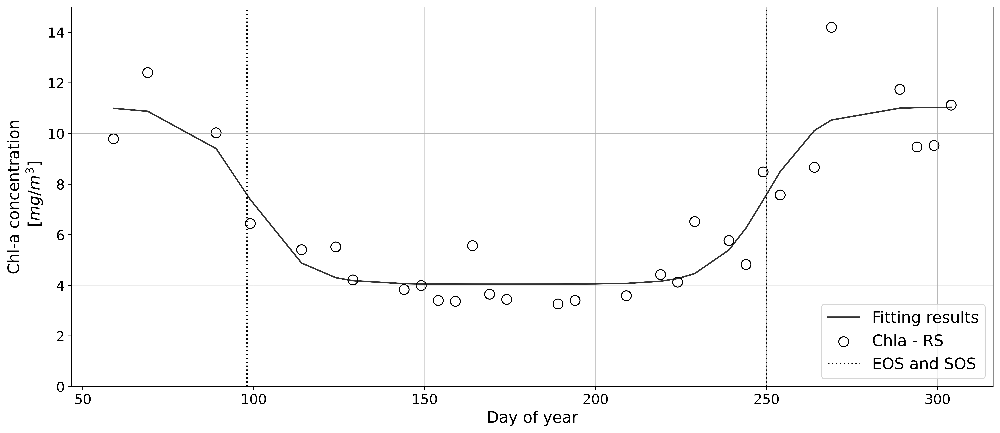
lake_malombe = ee.Geometry.Point([35.257449031658375,-14.642465147834072])
GSMaP = ee.ImageCollection('JAXA/GPM_L3/GSMaP/v6/operational')\
.filterBounds(lake_malombe)\
.filterDate(startDate, endDate)\
.select('hourlyPrecipRate')
precipi_df_malombe = precipi_dataframe_prod(GSMaP, lake_malombe)
precipi_df_malombe.head()
precipi_df_malombe_sub = precipi_df_malombe[['DOY', 'hourlyPrecipRate']]
precipi_df_malombe_sub = precipi_df_malombe_sub.groupby('DOY').agg('sum')
precipi_df_malombe_sub['Precip-mm/day'] = precipi_df_malombe_sub['hourlyPrecipRate']
precipi_df_malombe_sub = precipi_df_malombe_sub.groupby('DOY').agg('sum').reset_index()
precipi_df_malombe_sub['Precip-mm/day'] = precipi_df_malombe_sub['hourlyPrecipRate']
precipi_df_malombe_sub[['DOY', 'Precip-mm/day']].head()
plt.rcParams.update({'font.size': 16})
fig, ax = plt.subplots(figsize=(14, 6),constrained_layout=True)
doy_series = [i for i in range(1,364)]
ax.plot(doy_series, precipi_df_malombe_sub['Precip-mm/day'],
c='k',alpha=0.8)
ax.set_title('Precipitation variation')
ax.set_xlabel('DOY')
ax.set_ylabel('Precipitation [mm/day]')
ax.set_ylim(-0, 110)
ax.grid(lw=0.2)
ax.tick_params(axis='both', labelsize=14);
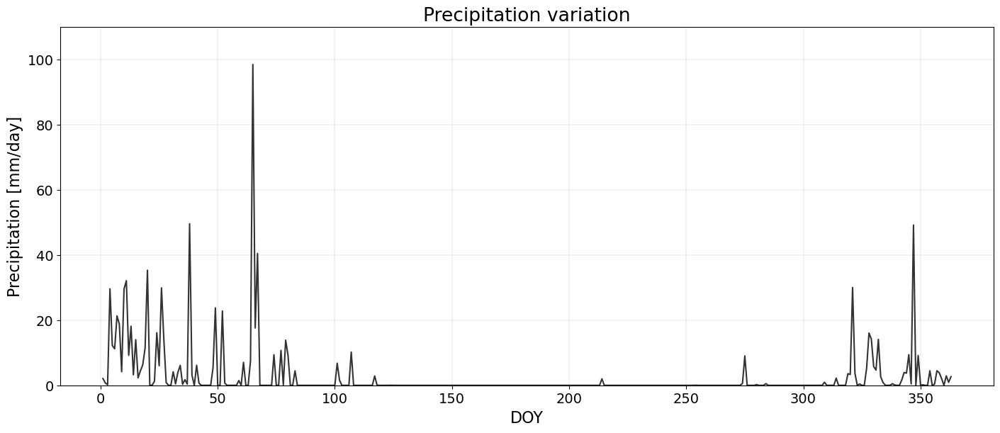
lake_malombe_land = ee.Geometry.Point([35.16317613350976,-14.643399266725753])
lake_malombe = ee.Geometry.Point([35.257449031658375,-14.642465147834072])
modis = ee.ImageCollection('MODIS/061/MOD11A2')\
.filterBounds(lake_malombe)\
.filterDate(startDate, endDate)\
.select('LST_Day_1km')
modLSTc = modis.map(Temp_correction);
temp_df_malombe = dataframe_prod_temp(modLSTc, lake_malombe)
temp_df_malombe_land = dataframe_prod_temp(modLSTc, lake_malombe_land)
add_date_info(temp_df_malombe)
add_date_info(temp_df_malombe_land)
temp_df_malombe.head(10)
plt.rcParams.update({'font.size': 16})
_, axs = plt.subplots(4, 1, figsize=(20, 10), constrained_layout=True, sharex=True, dpi=600)
axs = axs.flatten()
for i in range(4):
ax = axs[i]
if i == 0:
ax.plot(x, result.best_fit,
'k-', alpha=0.8, label='Fitting results')
ax.scatter(x, y, c='None', edgecolors='k', s=100, label='Chla - RS')
ax.set_ylabel('Chl-a\n concentration\n [$mg/m^3$]')
ax.set_ylim(-0, 15)
ax.axvline(98, c='k', ls=':')
ax.axvline(250, c='k', ls=':')
ax.legend(['Fitting results','Chla - RS', 'EOS and SOS'], loc='lower right')
elif i == 1:
ax.plot(temp_df_malombe['DOY'], temp_df_malombe['LST_Day_1km'],
c='k', alpha=0.8)
ax.set_ylabel('Water\n temperature\n [$^\circ C$]')
ax.set_ylim(18, 30)
ax.axvline(98, c='k', ls=':')
ax.axvline(250, c='k', ls=':')
elif i == 2:
ax.plot(temp_df_malombe_land['DOY'], temp_df_malombe_land['LST_Day_1km'],
c='k', alpha=0.8)
ax.set_ylabel('Land\n temperature\n [$^\circ C$]')
ax.set_ylim(20, 50)
ax.axvline(98, c='k', ls=':')
ax.axvline(250, c='k', ls=':')
elif i == 3:
ax.plot(precipi_df_malombe_sub['DOY'], precipi_df_malombe_sub['Precip-mm/day'],
c='k',alpha=0.8)
ax.set_xlabel('Day of year')
ax.set_ylabel('Precipitation\n [mm/day]')
ax.set_ylim(-0, 100)
ax.axvline(98, c='k', ls=':')
ax.axvline(250, c='k', ls=':')
ax.grid(lw=0.2)
ax.tick_params(axis='both')
# plt.savefig('./figure5.png')